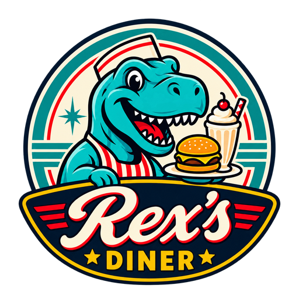

🍽️
Menüü
Vaata kõiki toite, jooke, snäkke, magusaid ampse ja baarijooke koos hindadega.
Ava menüü
REX'SDINERRETRO DINER • TUFF
Mõnus retrohõnguline diner, kus ootavad soojad road, head joogid ja sõbralik teenindus.
Vaata kõiki toite, jooke, snäkke, magusaid ampse ja baarijooke koos hindadega.
Ava menüüIgal nädalal võib Rex’s sind üllatada uue eripakkumisega.
Vaata pakkumistKas Rex’s võiks olla sinu järgmine töökoht? Vaata lähemalt kandideerimise infot.
Tööle Rex’si31. AUGUST – 6. SEPTEMBER
Kodune makaroniroog, Kirsi piimakokteil ja Rexi pannkoogid ühe mõnusa hinnaga.
CASEY’ST REX’SINI
Enne Rex’s Dineriks saamist tunti meid linnas kui Casey’s Dinerit Route 68 ääres. Tänane Rex’s on selle loo järgmine peatükk — uues kodus, kuid osa vanast pärandist elab menüüs siiani edasi.